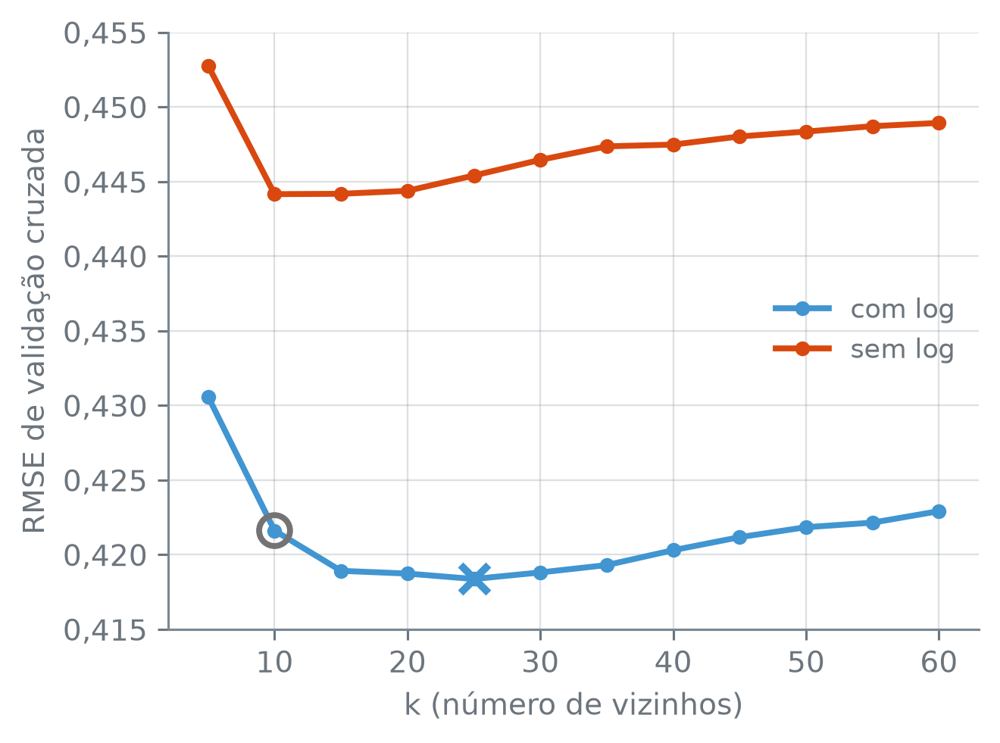

numero_br = lambda valor, casas=2: (
f"{valor:,.{casas}f}".replace(",", "_").replace(".", ",").replace("_", ".")
.replace("-", "−")
)Ajuste de Hiperparâmetros com GridSearchCV
Quantos vizinhos o k-NN deve consultar? E área, condomínio e IPTU devem passar pelo logaritmo antes da padronização? Nada no dado pediu os dez vizinhos da seção 17.4, nem o logaritmo, e as duas escolhas mudam o erro do modelo. Como escolher as duas, e com que dado, sem abrir o teste?
A função numero_br escreve os números com a pontuação brasileira:
O ponto de partida é a tabela sem linhas repetidas, a divisão estratificada por cidade, os dez preditores e o logaritmo do aluguel como resposta. O preparo é o da seção 17.3: as colunas categóricas viram colunas de 0 e 1; área, condomínio e IPTU passam por np.log1p e são padronizados; o andar ausente vira 0, com uma coluna que marca onde ele faltava; e as contagens são padronizadas.
alugueis = pd.read_csv("dados/alugueis.csv", na_values=["-"]).drop_duplicates()
preditores = ["cidade", "area_m2", "quartos", "banheiros", "vagas", "andar",
"aceita_animal", "mobiliado", "condominio", "iptu"]
treino, teste = train_test_split(alugueis, test_size=0.2, random_state=17,
stratify=alugueis["cidade"])
X_treino, y_treino = treino[preditores], np.log(treino["aluguel"])
preparo = ColumnTransformer([
("categoricas", OneHotEncoder(handle_unknown="ignore", sparse_output=False),
["cidade", "aceita_animal", "mobiliado"]),
("assimetricas", Pipeline([
("log", FunctionTransformer(np.log1p, feature_names_out="one-to-one")),
("escala", StandardScaler())]), ["area_m2", "condominio", "iptu"]),
("andar", Pipeline([
("preenche", SimpleImputer(strategy="constant", fill_value=0,
add_indicator=True)),
("escala", StandardScaler())]), ["andar"]),
("contagens", StandardScaler(), ["quartos", "banheiros", "vagas"]),
]).set_output(transform="pandas")
print("X_treino:", X_treino.shape)X_treino: (8267, 10)Escolhas que o fit não faz
O fit do k-NN guarda os anúncios de treino, e o do StandardScaler aprende uma média e um desvio. Nenhum dos dois decide quantos vizinhos consultar nem se a área passa pelo logaritmo antes da escala: essas escolhas são fixadas antes do fit e ficam de fora dele.
O que o fit aprende do dado são os parâmetros do modelo: a média e o desvio de cada coluna, no StandardScaler; os anúncios guardados, no k-NN; os coeficientes, na regressão linear. Uma escolha fixada antes do fit, que ele não altera, é um hiperparâmetro: o número de vizinhos do k-NN, ou a decisão de passar a área pelo logaritmo antes da escala.
Por que não escolher o número de vizinhos pelo erro no próprio treino? Pense no que acontece com k = 1 antes de ver a saída:
um_vizinho = Pipeline([("preparo", preparo),
("modelo", KNeighborsRegressor(n_neighbors=1))])
um_vizinho.fit(X_treino, y_treino)
residuo = y_treino - um_vizinho.predict(X_treino)
print("RMSE no treino, k = 1:", numero_br(np.sqrt(np.mean(residuo**2)), 4))RMSE no treino, k = 1: 0,0290np.sqrt(x) — a raiz quadrada, elemento a elemento. Com np.mean(residuo**2) dentro, é a fórmula do RMSE da seção 17.4.
No treino, o vizinho mais próximo de cada anúncio é ele mesmo, ou outro com os mesmos preditores, e o erro fica perto de zero, em 0,0290. Escolhido pelo erro de treino, o k tenderia a cair no 1, e nenhum anúncio novo tem uma cópia de si mesmo à espera no treino. O critério é o erro de validação cruzada, nos mesmos dez grupos da seção 17.4.
Uma grade sobre o Pipeline inteiro
O procedimento é o da seção 11.5, lá para o \(\lambda\) da ridge, e tem quatro passos: montar uma grade de valores; medir o erro de validação cruzada de cada um; ficar com o de menor erro; reajustar o modelo com esse valor, agora com todo o treino. O GridSearchCV faz os quatro.
A novidade aqui é que a grade não mexe só no modelo. Ela percorre dois hiperparâmetros, um de cada passo do Pipeline, e cada um é chamado pelo caminho até ele, com __ entre os nomes, como no set_params da seção 17.3. Os nomes disponíveis saem de get_params:
knn = Pipeline([("preparo", preparo), ("modelo", KNeighborsRegressor())])
for nome in knn.get_params():
if nome.endswith(("__log", "__n_neighbors")):
print(nome)preparo__assimetricas__log
modelo__n_neighborsknn.get_params() — um dicionário com todas as escolhas fixadas antes do fit, isto é, os hiperparâmetros; os parâmetros que o fit aprende não estão nele, apesar do nome do método; num Pipeline, inclusive os das etapas internas, com o caminho até cada um separado por __. Aqui só se imprimem os nomes que terminam em __log ou __n_neighbors.
preparo__assimetricas__log é a etapa log do Pipeline assimetricas, dentro do preparo. Ela aceita um transformador no lugar do atual ou a palavra "passthrough", que tira a etapa do caminho: área, condomínio e IPTU vão direto para a padronização, em metros quadrados e em reais. A grade tem doze valores de k, de 5 a 60 de 5 em 5, e as duas versões do preparo:
grupos = KFold(10, shuffle=True, random_state=17)
grade = {
"modelo__n_neighbors": list(range(5, 61, 5)),
"preparo__assimetricas__log": [
FunctionTransformer(np.log1p, feature_names_out="one-to-one"),
"passthrough",
],
}
candidatos = len(grade["modelo__n_neighbors"]) * len(
grade["preparo__assimetricas__log"])
print("candidatos:", candidatos)
print("ajustes:", candidatos * grupos.get_n_splits() + 1)candidatos: 24
ajustes: 241"passthrough" — no lugar de uma etapa de um Pipeline, pula a etapa: o que entra nela sai sem mudança.
grupos.get_n_splits() — o número de grupos do esquema de validação cruzada, 10 aqui.
São 24 combinações, cada uma ajustada nos dez grupos, mais o reajuste final do melhor candidato com todo o treino. As 24 são o produto 12 × 2 dos tamanhos das duas listas, e é esse o limite da busca em grade: cada hiperparâmetro novo multiplica o número de candidatos pelo tamanho da sua lista, e o custo junto. Por isso a grade fica restrita ao que tem motivo para variar.
Antes de rodar: o logaritmo foi motivado na seção 17.1 por uma conta sobre dois imóveis, um de área gigante e outro mediano. Ele deve baixar o erro de validação cruzada do k-NN em todo k? E você esperaria o melhor k abaixo ou acima de dez?
busca = GridSearchCV(knn, grade, cv=grupos, scoring="neg_root_mean_squared_error")
busca.fit(X_treino, y_treino)
resultados = pd.DataFrame({
"k": busca.cv_results_["param_modelo__n_neighbors"].astype(int),
"preparo": ["sem log" if isinstance(v, str) else "com log"
for v in busca.cv_results_["param_preparo__assimetricas__log"]],
"rmse": -busca.cv_results_["mean_test_score"],
})
erro = resultados.pivot(index="k", columns="preparo", values="rmse")
(erro.rename_axis(index=None, columns="k")
.style.format(lambda v: numero_br(v, 4))
.highlight_min(subset=["com log"], props="font-weight: bold"))| k | com log | sem log |
|---|---|---|
| 5 | 0,4306 | 0,4528 |
| 10 | 0,4216 | 0,4442 |
| 15 | 0,4189 | 0,4442 |
| 20 | 0,4187 | 0,4444 |
| 25 | 0,4184 | 0,4454 |
| 30 | 0,4188 | 0,4465 |
| 35 | 0,4193 | 0,4474 |
| 40 | 0,4203 | 0,4475 |
| 45 | 0,4212 | 0,4480 |
| 50 | 0,4218 | 0,4484 |
| 55 | 0,4222 | 0,4487 |
| 60 | 0,4229 | 0,4489 |
GridSearchCV(estimador, grade, cv, scoring) — mede o erro de validação cruzada do estimador em cada combinação da grade, com os grupos de cv, e no fit reajusta o melhor candidato com todas as linhas. A grade é um dicionário {"passo__parametro": valores}, e as combinações são todas as possíveis.
busca.cv_results_ — um dicionário com uma entrada por medida e um valor por candidato: em "param_modelo__n_neighbors", o k de cada um; em "mean_test_score", a média nos dez grupos, com o sinal trocado, como no cross_val_score.
df.pivot(index, columns, values) — rearruma uma tabela longa: uma linha por valor de index, uma coluna por valor de columns, preenchidas com values.
df.rename_axis(index, columns) — troca o nome do eixo das linhas e o das colunas; aqui, o k passa para o canto da tabela, e o cabeçalho fica numa linha só.
.highlight_min(subset, props) — aplica o estilo props, aqui o negrito, à menor célula das colunas de subset.
Os candidatos com "passthrough" são rotulados pelo tipo, isinstance(v, str), porque o outro valor da grade é um objeto, o FunctionTransformer, e não um texto. O .astype(int) converte a coluna de k em números inteiros, o tipo com que ela é lida nas contas adiante. O negrito marca o menor erro com o logaritmo. O chunk abaixo lê o melhor candidato e o compara com os dez vizinhos da seção 17.4:
melhor_k = busca.best_params_["modelo__n_neighbors"]
com_log = not isinstance(busca.best_params_["preparo__assimetricas__log"], str)
print("k escolhido:", melhor_k)
print("com log:", com_log)
print("RMSE de validação cruzada:", numero_br(-busca.best_score_, 4))
print("k = 10, com log:", numero_br(erro.loc[10, "com log"], 4))
perto = erro.index[erro["com log"] <= 1.005 * erro["com log"].min()]
print("a 0,5% do mínimo: k de", perto.min(), "a", perto.max())
print("mínimo fora da borda:", bool(5 < melhor_k < 60))k escolhido: 25
com log: True
RMSE de validação cruzada: 0,4184
k = 10, com log: 0,4216
a 0,5% do mínimo: k de 15 a 40
mínimo fora da borda: Truebusca.best_params_ — a combinação da grade com o menor erro, como dicionário.
busca.best_score_ — a pontuação média dessa combinação nos dez grupos, com o sinal trocado.
O escolhido é k = 25, acima de dez, com o logaritmo, e o erro de validação cruzada dele é 0,4184. Com os dez vizinhos fixados de antemão, o erro era 0,4217: a busca ganhou 0,0033 (0,4217 − 0,4184). Os valores de k de 15 a 40 ficam a menos de 0,5% do mínimo, e o mínimo não está numa ponta da grade, então estendê-la não deve mudar a escolha.
A figura abaixo mostra as 24 medidas. A cor separa as duas versões do preparo:
cores = {"com log": "C0", "sem log": "C1"}
em_br = lambda v, pos: numero_br(v, 3)
fig, ax = plt.subplots(figsize=(4.8, 3.6))
for preparo_nome, cor in cores.items():
ax.plot(erro.index, erro[preparo_nome], color=cor, marker="o", markersize=4,
linewidth=2, label=preparo_nome)
ax.scatter(melhor_k, -busca.best_score_, marker="x", s=90, color="C0",
linewidths=2.5, zorder=4, label="_nolegend_")
ax.scatter(10, erro.loc[10, "com log"], s=110, facecolors="none",
edgecolors="0.45", linewidths=2, zorder=4, label="_nolegend_")
ax.set_xticks(range(10, 61, 10))
ax.set_xlim(2, 63)
ax.set_xlabel("k (número de vizinhos)")
ax.set_ylabel("RMSE de validação cruzada")
ax.yaxis.set_major_formatter(em_br)
ax.legend(loc="center right")
plt.tight_layout()
plt.show()
No código, marker="o" põe um ponto em cada valor medido da linha, e facecolors="none" deixa o círculo vazio, só com o contorno na cor de edgecolors.
Duas leituras, com pesos diferentes. O logaritmo ajuda em todo k da grade, por uma margem que a conta abaixo mede. O k, por sua vez, cai num vale largo: de 15 a 40 a curva azul quase não se mexe.
ganho_log = erro["sem log"] - erro["com log"]
print("log ganha em todo k:", bool((ganho_log > 0).all()))
print("ganho, menor:", numero_br(ganho_log.min(), 3))
print("ganho, maior:", numero_br(ganho_log.max(), 3))log ganha em todo k: True
ganho, menor: 0,022
ganho, maior: 0,028As duas perguntas de antes da busca têm resposta. Sim, o logaritmo baixa o erro de validação cruzada em todo k, com um ganho de 0,022 a 0,028; e o melhor k, 25, ficou acima de dez. Mesmo o menor ganho do logaritmo é mais de seis vezes os 0,0033 que a troca de k = 10 por k = 25 rendeu (0,022 ÷ 0,0033 ≈ 6,7).
Quanto a área pesa na distância entre dois anúncios comuns? A distância do k-NN é a raiz da soma dos quadrados das diferenças, coluna a coluna, entre os dois anúncios; o peso de uma coluna é a fatia dela nessa soma. Na seção 17.1, entre o imóvel gigante e um mediano, o logaritmo tirou da área o monopólio da distância. Para os anúncios comuns, o problema sem ele é o avesso desse: os poucos imóveis enormes inflam o desvio padrão da área, e, dividida por esse desvio, a área dos anúncios comuns fica espremida perto da média e quase não pesa na distância entre eles. A conta abaixo mede a fatia mediana da área, com e sem o logaritmo, e também até quantos desvios da média ficam 95% dos anúncios. Os pares são cada linha do treino com a anterior; como a ordem das linhas é a do sorteio da divisão, eles são só uma amostra de pares quaisquer:
area = X_treino["area_m2"]
print("área, desvio:", numero_br(area.std(), 0), "m²")
print("área, mediana:", numero_br(area.median(), 0), "m²")
sem_log = clone(preparo).set_params(assimetricas__log="passthrough")
for nome, versao in [("com log", clone(preparo)), ("sem log", sem_log)]:
Z = versao.fit_transform(X_treino)
quadrados = Z.diff().iloc[1:] ** 2
fatia = quadrados["assimetricas__area_m2"] / quadrados.sum(axis=1)
faixa = Z["assimetricas__area_m2"].abs().quantile(0.95)
print(f"{nome}, 95% até:", numero_br(faixa, 2), "desvio")
print(f"{nome}, fatia da área:", numero_br(100 * fatia.median(), 1) + "%")área, desvio: 606 m²
área, mediana: 95 m²
com log, 95% até: 1,84 desvio
com log, fatia da área: 7,3%
sem log, 95% até: 0,41 desvio
sem log, fatia da área: 0,2%df.diff() — a diferença de cada linha para a anterior, coluna a coluna; a primeira linha, sem anterior, fica nula, e o .iloc[1:] a descarta.
O desvio padrão da área é de 606 m², contra uma mediana de 95 m². Sem o logaritmo, 95% dos anúncios ficam a menos de 0,41 desvio da média; com ele, a menos de 1,84. Nos pares de anúncios, a fatia mediana da área na soma dos quadrados é de 0,2% sem o logaritmo e de 7,3% com ele. Sem o logaritmo, a área quase não conta na distância entre anúncios comuns, e o k-NN escolhe os vizinhos pelas outras colunas; o logaritmo devolve a área à escolha. As duas contas não se contradizem: a da seção 17.1 media um par com o imóvel gigante, e esta mede a mediana de pares comuns; o logaritmo reduz a fatia da área no primeiro caso e a devolve no segundo.
O vale é raso
Todos os candidatos foram medidos nos mesmos dez grupos, então a comparação pode ser feita grupo a grupo, como na seção 17.4. O cv_results_ guarda o erro de cada candidato em cada grupo:
por_grupo = pd.DataFrame(
[-busca.cv_results_[f"split{g}_test_score"] for g in range(10)],
columns=list(zip(resultados["k"], resultados["preparo"])),
)
k25_vence_k10 = por_grupo[(melhor_k, "com log")] < por_grupo[(10, "com log")]
log_vence = por_grupo[(melhor_k, "com log")] < por_grupo[(melhor_k, "sem log")]
print(f"erro k = {melhor_k} < erro k = 10:", int(k25_vence_k10.sum()), "de 10")
print("erro com log < sem log:", int(log_vence.sum()), "de 10")erro k = 25 < erro k = 10: 6 de 10
erro com log < sem log: 10 de 10busca.cv_results_[f"split{g}_test_score"] — a pontuação de cada candidato no grupo g, de 0 a 9. Empilhadas, formam uma tabela com uma linha por grupo e uma coluna por candidato.
O erro de k = 25 fica abaixo do de k = 10 em só 6 dos 10 grupos; o erro com o logaritmo fica abaixo do erro sem ele, com o mesmo k, em 10 de 10. Se em quatro grupos a ordem se inverte, outro sorteio dos grupos poderia escolher outro k? A mesma busca, só com o logaritmo, repetida com as sementes de 0 a 4:
so_k = {"modelo__n_neighbors": grade["modelo__n_neighbors"]}
escolhidos, menores = [], []
for semente in range(5):
outros_grupos = KFold(10, shuffle=True, random_state=semente)
outra_busca = GridSearchCV(knn, so_k, cv=outros_grupos,
scoring="neg_root_mean_squared_error")
outra_busca.fit(X_treino, y_treino)
k_semente = outra_busca.best_params_["modelo__n_neighbors"]
escolhidos.append(k_semente)
menores.append(-outra_busca.best_score_)
print(f"semente {semente}: k =", k_semente,
"| RMSE", numero_br(-outra_busca.best_score_, 4))
print("todos de 15 a 40:", all(15 <= k <= 40 for k in escolhidos))
print("RMSE de", numero_br(min(menores), 4), "a", numero_br(max(menores), 4))semente 0: k = 15 | RMSE 0,4179
semente 1: k = 25 | RMSE 0,4186
semente 2: k = 20 | RMSE 0,4181
semente 3: k = 15 | RMSE 0,4187
semente 4: k = 25 | RMSE 0,4189
todos de 15 a 40: True
RMSE de 0,4179 a 0,4189O k escolhido muda com o sorteio dos grupos e fica, nas cinco sementes, dentro da faixa de 15 a 40 que a semente 17 mostrou. O resultado firme da busca é o logaritmo; o k exato é uma escolha dentro de um vale em que os vizinhos ao redor dão quase o mesmo erro, e trocar 25 por 20 quase não muda o erro.
O que o melhor número promete
O 0,4184 é o menor de 24 números, cada um medido com o ruído de uma divisão em grupos. Com as sementes de 0 a 4, esse menor erro foi de 0,4179 a 0,4189: o mesmo treino e a mesma grade, e só o sorteio dos grupos mudou. Dois efeitos agem sobre ele, em sentidos opostos. O primeiro vem de escolher o mínimo: entre muitas medidas ruidosas, a menor tende a ser a que teve sorte no sorteio dos grupos, e cai abaixo do erro verdadeiro do candidato que a produziu. Por esse lado, o best_score_ é otimista.
O segundo vem do tamanho de cada ajuste. Na validação cruzada, cada ajuste usa nove décimos do treino; o modelo final usa o treino inteiro e tem mais anúncios entre os quais procurar vizinhos. Por esse lado, o erro da validação cruzada tende a superestimar o do modelo final.
O saldo dos dois não se conhece de antemão, e por isso o best_score_ não é a estimativa final do erro. Quem a dá é um conjunto que não participou da escolha, e o teste continua fechado.
O modelo escolhido já existe. O GridSearchCV reajustou o Pipeline com k = 25 e o logaritmo em todos os anúncios de treino:
escolhido = busca.best_estimator_
print("anúncios no reajuste:", numero_br(escolhido["modelo"].n_samples_fit_, 0))
print("vizinhos:", escolhido["modelo"].n_neighbors)anúncios no reajuste: 8.267
vizinhos: 25busca.best_estimator_ — o Pipeline com a melhor combinação da grade, reajustado com todas as linhas de X_treino; é o modelo que se usa para prever.
escolhido["modelo"].n_samples_fit_ — quantas linhas o k-NN guardou no fit, isto é, entre quantos anúncios ele procura os vizinhos.
Os 8.267 anúncios de treino entraram no reajuste, e nenhum anúncio do teste. A escolha do k e a do logaritmo saíram da validação cruzada, dentro do treino, e é esse Pipeline, com o preparo e o modelo juntos, que um anúncio novo recebe.